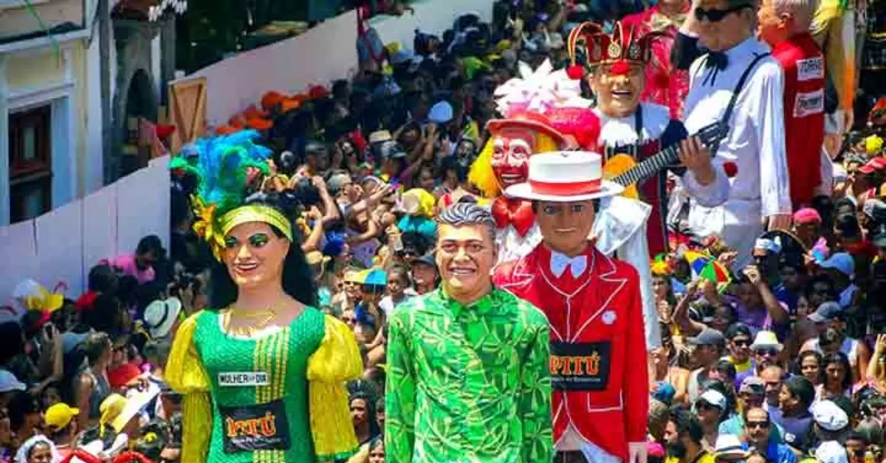

O Carnaval de Olinda é amplamente reconhecido como um dos mais vibrantes e tradicionais do Brasil, atraindo tanto turistas quanto moradores locais que se reúnem para celebrar essa festividade única. Conhecido por sua energia contagiante e ambiente acolhedor, o evento reúne milhares de foliões que percorrem as ladeiras históricas da cidade ao som do frevo, maracatu, coco e ciranda. Diferente de outros carnavais, em Olinda não há trios elétricos ou cordões de isolamento: a festa é feita pelo povo e para o povo, criando uma atmosfera de inclusão e alegria que é difícil de encontrar em outros lugares. As ruas se enchem de música e dança, com cada esquina oferecendo uma nova oportunidade para se divertir, fazer amigos e vivenciar a cultura local de uma maneira autêntica e envolvente. Cada dia de carnaval é uma nova aventura, repleta de surpresas e momentos inesquecíveis.
Uma das marcas registradas do Carnaval de Olinda são os Bonecos Gigantes, que são verdadeiras obras de arte e um símbolo da criatividade local. Essas figuras coloridas e caricatas desfilam pelas ruas, representando personagens famosos da cultura, política e ficção, e são uma atração à parte para os foliões e turistas. O mais icônico deles é o Homem da Meia-Noite, que abre oficialmente o carnaval na noite de sábado, atraindo multidões com sua presença imponente e seu carisma. Esses bonecos, que podem chegar a vários metros de altura, são carregados por pessoas que dançam e interagem com o público, criando um ambiente festivo e cheio de alegria. Além disso, a tradição dos bonecos é uma parte fundamental da identidade cultural de Olinda, simbolizando a criatividade e o espírito comunitário da festa. A preparação para os desfiles dos bonecos envolve muitas horas de trabalho e dedicação, refletindo o amor e a paixão da comunidade pelo seu carnaval.
Os blocos de rua são o coração pulsante do Carnaval de Olinda, cada um trazendo sua própria identidade, estilo e tradição para a celebração. Com fantasias criativas, músicas animadas e muita alegria, esses blocos atraem foliões de todas as idades e origens. Entre os mais famosos estão o "Eu Acho é Pouco", conhecido por suas cores vibrantes de vermelho e amarelo, e o "Pitombeira dos Quatro Cantos", que arrasta multidões pelas ladeiras com seu ritmo contagiante e animação. Cada bloco tem sua própria história e tradição, e as pessoas se reúnem para celebrar em um espírito de camaradagem e diversão. A interação entre os foliões e os blocos cria uma energia única que faz do Carnaval de Olinda uma experiência inesquecível. Os blocos são compostos por músicos talentosos, dançarinos e foliões que se entregam à festa, garantindo que a alegria e a música nunca cessem durante os dias de folia.
Olinda está localizada a apenas 6 km de Recife, capital de Pernambuco, e é facilmente acessível por diversas opções de transporte. É possível chegar de carro, táxi ou transporte público, como ônibus e metrô. Durante o carnaval, algumas ruas são fechadas para veículos, então é recomendável estacionar em áreas designadas e seguir a pé. A caminhada pelas ladeiras históricas não só é uma forma de chegar à festa, mas também uma oportunidade de apreciar a arquitetura colonial e o charme da cidade. Ao chegar, você será recebido por uma atmosfera vibrante e cheia de vida, pronta para a celebração. Além disso, considere usar aplicativos de transporte para facilitar seu deslocamento, especialmente durante os dias de maior movimento.